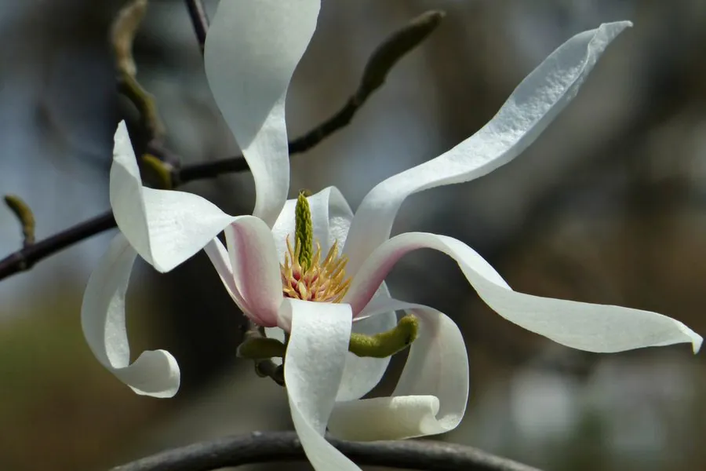

乔木 · 植物界
宝华玉兰 Magnolia zenii

木兰科木兰属落叶乔木，中国特有种，野生植株仅存于江苏句容宝华山，花被片上部白色、下部紫红，极为珍稀。
- 分类
- 门被子植物门纲木兰纲目木兰目科木兰科属木兰属
- 栖息环境
- 海拔约 200 米的低山丘陵落叶阔叶林，喜温暖湿润、排水良好
- 地理分布
- 中国江苏句容宝华山一带，为中国特有种，野生植株极少
- 保护级别
- IUCN 极危（CR）；中国国家二级保护野生植物，野生个体不足百株
物种志
宝华玉兰为落叶乔木，高可达 11 米，树皮灰白色、光滑，小枝细弱。叶片倒卵形或椭圆形，长 7–12 厘米，先端短渐尖，下面沿脉被柔毛。花先叶开放，单生枝顶，直径约 10–12 厘米，花被片 9 枚，上部白色、下部紫红色，芳香浓郁；聚合果圆柱形，长 10–14 厘米，成熟时开裂露出红色种子。
本种为中国特有种，野生植株仅见于江苏句容宝华山一带的低山丘陵，生于海拔约 200 米的落叶阔叶林中，喜温暖湿润、排水良好的微酸性土壤。它花大而香、色彩独特，是江南著名的早春观赏树种，南京、上海等地植物园已引种栽培。由于野生个体极少、分布区极窄，宝华玉兰被 IUCN 评估为极危，并列为国家二级保护野生植物，保护区通过人工繁育与回归试验扩大其种群。
形态与习性
- 株高可达 11 米，树皮灰白色光滑
- 花期3 月，先花后叶，花白底紫红
- 果期9 月，聚合果圆柱形
- 光照喜光，幼树耐半阴
- 水分喜湿润，忌积水
- 土壤微酸性、排水良好的山地黄棕壤
- 保护级别国家二级保护野生植物，IUCN 极危
趣味知识
- 宝华玉兰的野生植株几乎全部集中在江苏句容宝华山，分布范围不足数平方公里。
- 它的花被片上部白色、下部紫红色，盛开时像一盏盏倒悬的小灯。
- 宝华玉兰被列为极危物种，野生个体数量一度不足百株。
- 植物园通过嫁接与播种繁殖，已将其引种到南京、上海等地的专类园。